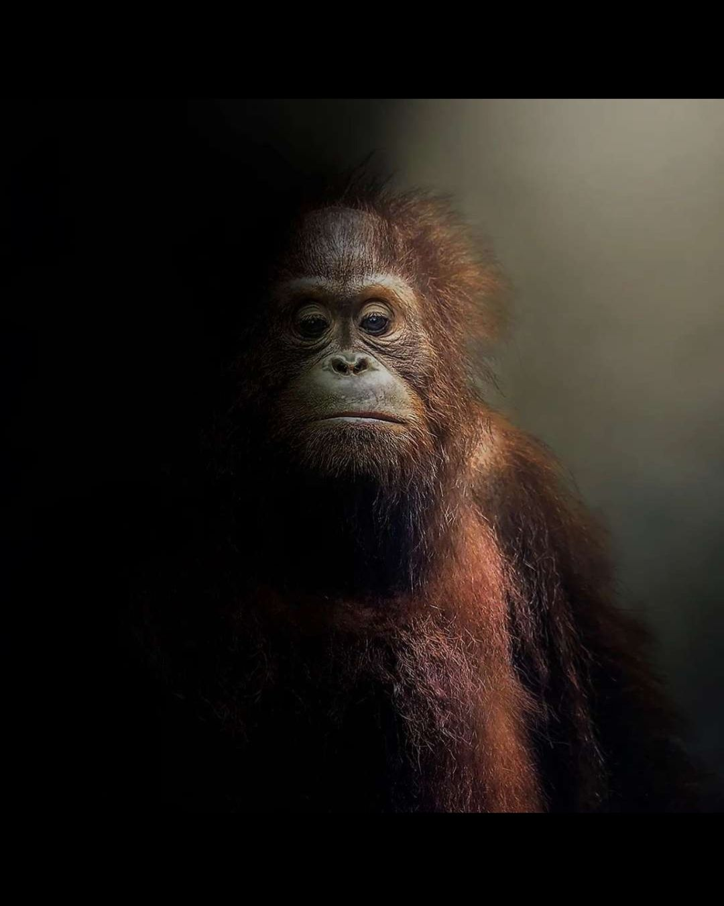

Hi, I'm Noah Terrell and Welcome to my Site
I'm a 4th year Computer Science Major at UCSD who is interested in systems and web development. I grew up in San Diego California and I really enjoy the outdoors.

I'm a 4th year Computer Science Major at UCSD who is interested in systems and web development. I grew up in San Diego California and I really enjoy the outdoors.
